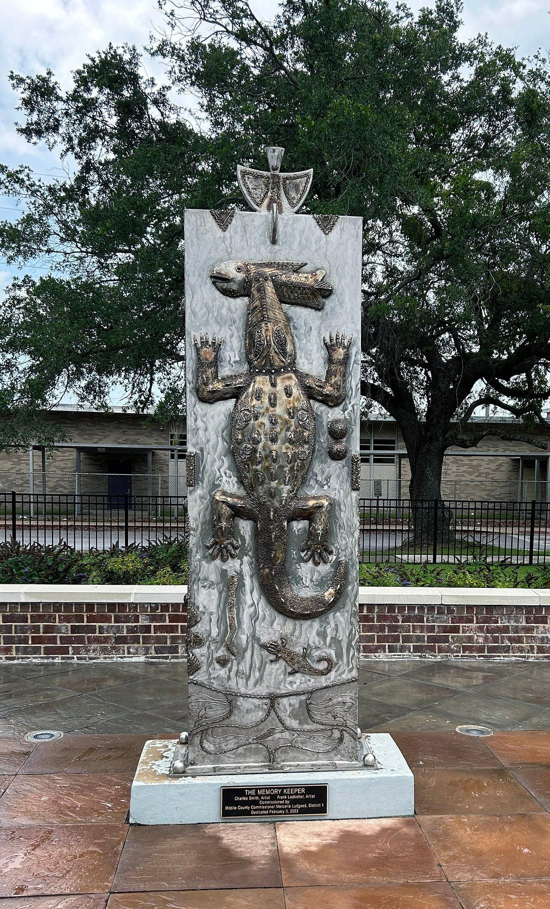

About Mobile
Located in Alabama's Gulf Coast at the head of Mobile Bay, Mobile is the state's oldest city and a key cultural and economic hub. Founded in 1702 as the first capital of French colonial Louisiana, it reflects centuries of French, Spanish, British, Creole, and African Influences. Situated in the southwestern region of Alabama, Mobile is classified as an urban city, offering a mix of historic charm with modern industry, shipping, and education. Known as the "Azalea City" and the birthplace of Mardi Gras in the U.S., it remains both a cultural landmark and a thriving center of commerce.
Demographics & Statistics
- City Population: ~185,000
- Median Household Income: $51,090 (Statewide average: $62,000)
- Poverty Rate: ~18.9%
- Employment Rate: ~56%
Mobile has a diverse population shaped by centuries of immigration and trade. About 32% of adults hold a bachelor's degree or higher, and nearly 91% have at least a high school diploma.
Cost of Living
Mobile's cost of living is below the national average, particularly in housing.
- Overall Index: ~13% lower than U.S. average.
- Housing: Roughly 30% cheaper than the national norm.
- Groceries: Slightly below average.
- Utilities: Near or slightly above the U.S. average, reflecting Gulf Coast energy costs. This balance makes Mobile relatively affordable compared with other Gulf Coast cities while offering a unique coastal lifestyle.
Things to do
Mobile combines historic architecture, vibrant festivals, coastal beauty, and arts into a fun visitor experience.
History & Landmarks
- Mobile Carnival Museum: Dedicated to the history and tradition of America's first Mardi Gras.
- USS Alabama Battleship Memorial Park: A major military history site featuring the battleship USS Alabama, aircraft, and exhibits.
- History Museum of Mobile: Showcases over 300 years of the city's past.
- Bragg-Mitchell Mansion: A Greek Revival antebellum home built in 1855.
Parks & Outdoor Spaces
- Bellingrath Garden & Home: A 65-acre estate with landscaped gardens and historic home tours.
- Dauphin Island: A barrier island with beaches, bird sanctuaries, and the Dauphin Island Sea Lab.
- 5 Rivers Delta Center: Outdoor recreation and eco-tours at the Mobil-Tensaw Delta.
Nearby Escapes - Florida Panhandle
Just a short drive east of Mobile, the Florida Panhandle offers a refreshing coastal getaway with sandy beaches, charming small towns, and laid-back nature. These spots make for excellent day trips or overnight adventures, combining scenic beauty with recreational activities like beachcombing, paddling, and coastal hikes. Highlights include:
- Emerald Coast & Destin: picture-perfect beaches and vibrant coastal towns
- Port St. Joe & Cape San Blas: peaceful, old-Florida atmosphere, ideal for quiet beach walks
- Pensacola: a historic city mixing military history, modern beaches, and local culture
Arts & Culture
- Saenger Theatre: A historic 1927 performance hall that hosts concerts, theatre, and film.
- Mobile Museum of Art: With over 10,000 works of art spanning 2,000 years.
- Local Festivals: Mobile's Mardi Gras remains its most famous tradition, but events like the Azalea Trail Festival and seafood festivals also highlight the city's cultural scene.
Culinary Scene & Nightlife
- Gulf seafood defines Mobile's food culture. Favorites include oysters, shrimp, and gumbo.
- Local institutions like Wintzell's Oyster House and waterfront spots like Bluegill restaurant showcase coastal dining.
- Downtown Dauphin Street features lively bars, music venues, and coffee shops such as Yellowhammer Coffee.
Sports & Entertainment
- University of South Alabama Jaguars: Compete in NCAA Division I athletics, with football Hancock Whitney Stadium.
- Mobile Civic Center & Saenger Theatre: Key venues for concerts, shows, and large events.
History
Colonial Beginnings
Mobile was founded in 1702 by the French and served as the first capital of French Louisiana. It later passed into British hands in 1763, then Spanish in 1780, before finally becoming part of the United States in 1813.
19th Century Growth
During the 1800s, Mobile thrived as a cotton port city, enriched by shipping, river trade, and international commerce. Its Mardi Gras tradition began in 1830, predating New Orleans' celebrations. The city also saw antebellum prosperity reflected in its surviving mansions and churches.
Civil War & Reconstruction
Mobile was a major confederate port during the Civil War, famously tied to the Battle of Mobile Bay in 1864 where Admiral David Farragut declared, "Damn the torpedoes, full of speed ahead!" Following the Union victory, Mobile entered the Reconstruction era, gradually rebuilding its economy and infrastructure while transitioning from a wartime stronghold to a renewed center of trade and industry.
Modern Mobile
Today, Mobile is a city that balances its maritime and industrial heritage with modern growth in sectors such as medicine, aerospace, shipping, and higher education. The Port of Mobile remains one of the busiest in the nation, while the University of South Alabama and local medical centers anchor the city's health and research presence.
Mobile has also drawn renewed national and international attention through the story of Clotilda, the last known slave ship to arrive in the United States. Smuggled into Mobile Bay in 1860 (more than 50 years after the transatlantic slave trade was outlawed) the Clotilda brought 110 captive West Africans to Alabama. After emancipation, many of the survivors created a community in their own just north of the city, known as Africatown. There they preserved elements of their language, culture, and traditions, building churches, schools, and businesses in what became a rare, self-sustaining settlement of formerly enslaved Africans.
In 2019, archaeologists confirmed the discovery of the Clotilda wreck in the Mobile River, which further underscored Africatown's historic importance. The opening of the Africatown Heritage House in 2023 has provided a museum and cultural center dedicated to telling the story of the Clotilda and its descendants, making Africatown both a living community and a vital part of Mobile's identity. Today, as Mobile continues to modernize its economy and waterfront, it also embraces this layered history, honoring its role in the nation's industrial development while preserving the resilience and legacy of communities like Africatown.
Colleges & Universities
- University of South Alabama: A public research university offering strong programs in medicine, engineering, and business.
- Spring Hill College: The oldest Catholic college in the Southeast, founded in 1830.
- University of Mobile: A private Christian university offering liberal arts and professional programs.
- Bishop State Community College: Provides two-year degrees and workforce training.
Educational Attainment of Mobile City Residents 25+ (U.S. Census Bureau 2023)
- High school diploma or higher: ~91%
- Bachelor's degree or higher: ~32%
- Graduate or professional degree: ~11%